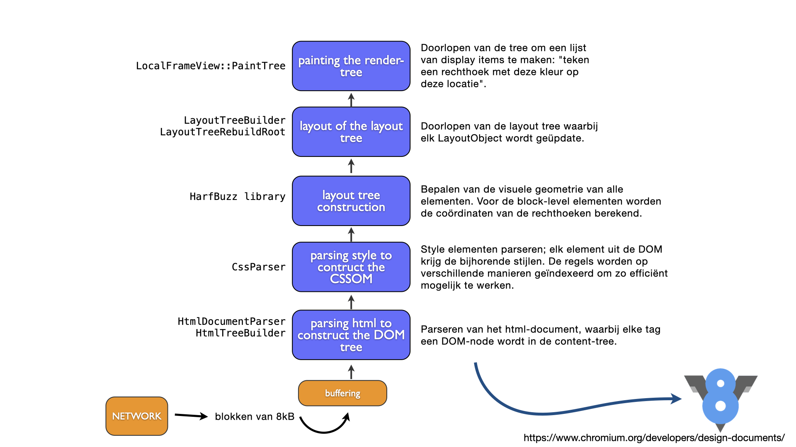

CSS#
CSSOM#
Waar HTML feitelijk de data van onze website is, wordt de vormgeving bepaald door de Cascading Style Sheets (CSS). Om dit voor elkaar te krijgen, maakt de browser behalve een DOM-tree ook een CSS-Object-Model die voor het renderen van de HTML gebruikt wordt. Let op dat alles wat je op het scherm ziet uiteindelijke gestileerd wordt aan de hand van een stylesheet: wanneer je een element niet zelf van een stijl voorziet, wordt de interne stylesheet van de browser gebruikt (zoals te zien is in onderstaande schermafbeelding):

Het proces van laden van de HTML tot het weergeven van de pagina op het scherm doorloopt de onderstaande stappen:
.
Uitgebreide werking van browsers
In webtechnologie 3 gaan we redelijk uitgebreid in op de werking van de browser. Voor de huidige module volstaat het hier wat parate kennis van te hebben.
Selectors en Style-rules#
Om onderdelen van onze webpagina van een specifieke stijl te kunnen voorzien, moeten we de browswer natuurlijk laten weten welk onderdeel van de DOM we van welke stijl willen voorzien. Hiervoor zijn dus twee technieken nodig. Het bepalen van het element uit de DOM doen we met selectors en het definiëren van de stijl doen we met style-rules.
We kunnen een node in de DOM selecteren op basis van drie eigenschappen: de naam van de node, de (waarde van) verschillende attributen van die node, of de positie van de node binnen de hele DOM-tree. De algemene syntax is als volgt:
tagnameselecteert de tags mettagname;tagname.classnameselecteert de tagstagnamewaarbijclass="classname";tagname[attr='value']selecteert de tagstagnamewaarbijattr="value".
Zie de onderstaande HTML:
1<html>
2 <head>
3 <title>DOMdemo</title>
4 <link rel="stylesheet" href="./style.css">
5 </head>
6 <body>
7 <div class="container" id="main">
8 <h1 lang="NL-nl">Awesome dingen</h1>
9 <p class="container">De beste paragraaf ooit.</p>
10 </div>
11 </body>
12</html>
selector |
omschrijving |
|---|---|
|
Selecteert de |
|
Selecteert de |
|
Selecteert dezelfde div, alleen nu op de waarde van het attribuut |
|
Selecteert de |
|
Selecteert de |
|
Selecteert zowel de |
|
Selecteert de |
|
Selecteert dezelfde |
|
Selecteert elke |
|
Selecteert elke |
|
Selecteert het element waarvan het attribuut |
Meer uitleg over selectors
Je kunt heel veel meer doen met die selectors; bekijk de documentatie op MDN voor een volledig overzicht.
Style-rules#
Wanneer je een node in de DOM-tree hebt gematcht, kunt je door middel van één of meer style-rules aangeven hoe die node moet worden weergegeven. De algemene syntax van zo’n style-rule is attribute: value; (let op: die spatie tussen het attribuut en de waarde is optioneel, de puntkomma na de waarde is dat niet). De *style-rules die bij een specifieke node horen, worden gegroepeerd door middel van accolades. De volledige vorm van het stileren van een node wordt dus als volgt:
selector {
attribute1: value1;
attribute2: value2;
...
}
Er zijn – letterlijk – honderden verschillende attributen die je kunt instellen, met some tientallen opties per attribuut. Het is niet praktisch (en niet echt nuttig) om ál die verschillende opties uit het hoofd te leren, maar de meest voor de hand liggende en de meest gebruikte moet je als professional (ook als je met name op de backend werkt) toch wel beheersen. Bekijk verder de documentatie op MDN om hier een beeld van te krijgen.
Locatie van de stylesheets#
Je kunt de stilering van je webpagina op drie verschillende locaties definiëren:
in separate bestanden
binnen de
<style></style>-tagsin het
style=""-attribuut van de tag in kwestie
Het meest gebruikelijke van deze opties is de eerste: separate bestanden. Dit heeft als voordeel dat dezelfde stilering over verschillende html-bestanden gedeeld kan worden, én dat je de stijl radicaal scheidt van de data.
Een dergelijk bestand bevat eenvoudig de stilering zoals die hierboven is beschreven: er is geen noodzaak van speciale code of headers om duidelijk te maken dat het om een stylesheet gaat. De enige eis is dat het bestand .css als extensie heeft, zodat de browser weet dat dit om een stylesheet gaat (en niet, bijvoorbeeld, om een tekst-bestand).
Om een dergelijk bestand aan je HTML-bestand te koppelen, maar je gebruik van de link-tag, waarbij je het rel-attribuut zet op stylesheet:
<link rel="stylesheet" href="styles/style.css">
Je kun meerdere stylesheets aan één HTML-document koppelen; hiervoor herhaal je eenvoudig de bovenstaande regel voor elke stylesheet.
Om de stilering binnen het HTML-document zelf te definiëren, gebruik je dus de style-tag:
<style>
body {
background-color:red;
}
</style>
Net als de link-tag, kun je de style-tag in principe overal in je HTML-document neerzetten. Het is echter goed gebruik om beide tags in de header-tag van je document te plaatsen. Binnen deze tag wordt informatie over het HTML-document gezet en de stilering is iets waar dit zeker voor geldt.
De laatste optie, om de stilering direct aan de betreffende tag te koppelen, ziet er als volgt uit:
<p style="background-color:blue;font-size:30px;">
Hoewel dit werkt en je het in het wild best wel regelmatig tegenkomt, is dit van de drie opties verreweg de slechtste. Allereerst is de data en vormgeving veel te sterk gekoppeld (weten we nog van de SOLID-principles? – die gelden ook hier), en het onderhouden van de stilering is daardoor een stuk moeilijker: als je een heel groot HTML-document hebt, en je een stilering hebt die je wilt aanpassen, kan het best een zoektocht zijn om te onderzoeken waar die stilering exact vandaan komt.
Specificiteit#
Hoe specifieker selector een node matcht, hoe belangrijker. Dit betekent dat als twee selectors dezelfde node matchen, en deze beide selectors conflicterende stilering definiëren, de stijl die gedefinieerd is in de meest specifieke selector wordt gebruikt. Zie het onderstaande voorbeeld, waarbij we uitgaan van het voorbeeld HTML-document dat we hierboven hebben weergegeven:
div { background-color:green; font-size:20px; }
div.container { background-color:red; }
#main { background-color:blue; }
In dat geval wordt de achtergrond van de <div id="main"> blauw weergegeven (de laatste regel in de bovenstaande css ‘wint’). Merk op dat de letters nog steeds twintig pixels groot worden gerenderd, omdat die regel niet door de ‘winnende’ selector wordt overschreven – dit is exact het cascading-effect van CSS.
Wanneer de specificiteit geen uitsluitsel geeft, is de algemene volgorde van rendering eigenlijk van onder naar boven:
Eerst ‘wint’ de stilering die gedefinieerd is in het
style=""-attribuut van de betreffende tag.Vervolgens wordt gekeken naar de stilering in de
<style>-tag in het HTML-document zelf en naar de externe stylesheets.
Mocht het zo zijn dat er dan nog meerdere selectors zijn die dezelfde node selecteren, dan gaat het op volgorde van laden: een eerder geladen selector kan door een later geladen worden overschreven.
specificiteit
Dit specificiteit kan een behoorlijk complexe puzzel worden. Zie dit document op MDN voor een nadere beschrijving. Onthoud dat het van belang is dat je het de browser ‘zo eenvoudig mogelijk maakt’: heel complexe en ingewikkelde stylesheets zorgen ervoor dat de browser behoorlijk wat werk moet verrichten, wat de rendertijd niet ten goede komt.